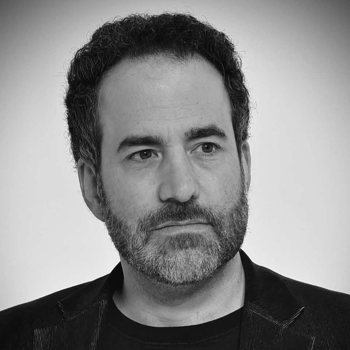
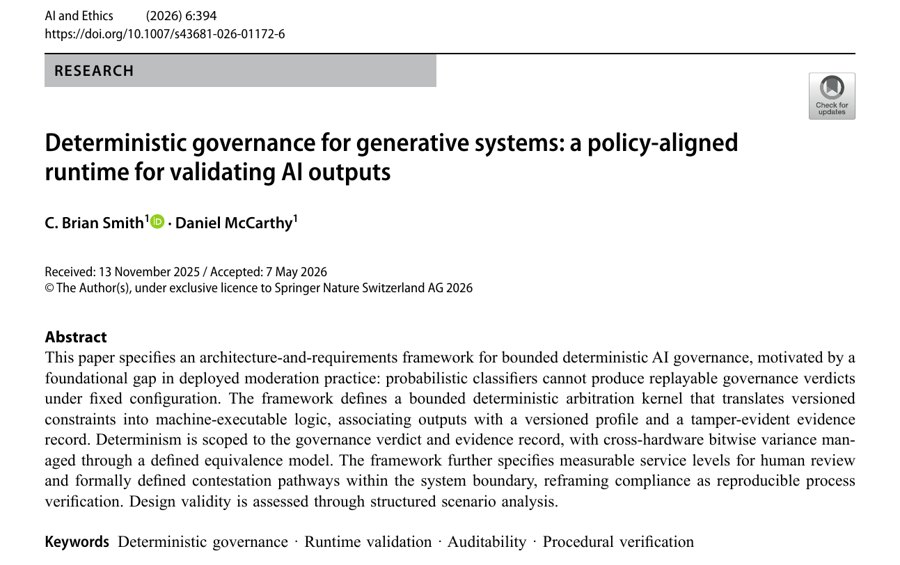

AI adoption for CPA firms
Prepared for
Your whole staff, writing like your best partner.
(Right now, it’s all in her head, and she goes home at six.)
Meanwhile, your team is already using AI the way a sixteen-year-old uses the family car: eagerly, without asking, and nobody’s sure where it’s been.
(Some have pasted client files into their personal ChatGPT. You could ask which ones. You probably should.)
That catch is your firm’s rule, running at every desk.
Now it isn’t only in her head.
(Ten of her best emails. The lines they share become the rules every draft follows.)
at a CPA firm, on seats it already pays for, drafting in its voice under its review rules.
Four departments. One standard.
Office hours for the whole firm, every week, until it’s how everyone works. And for the people who lead it, one-on-one coaching, made to measure.
Career journalists. We interview your people before we touch the software.


How to check AI output against written rules.Smith & McCarthy · peer-reviewed · AI and Ethics, Springer Nature, 2026Prepared for
AI adoption for CPA firms
Your best partner, at every desk.
(She still goes home at six. Her judgment stays.)
Free consultation · brian@theprompttank.com
The idea
Your whole staff, writing like your best partner.
(Right now, it’s all in her head, and she goes home at six.)
Meanwhile, your team is already using AI the way a sixteen-year-old uses the family car: eagerly, without asking, and nobody’s sure where it’s been.
(Some have pasted client files into their personal ChatGPT. You could ask which ones. You probably should.)
The catch
That catch is your firm’s rule, running at every desk.
Flip the switch. The rule decides what stays.
Voice DNA
Now it isn’t only in her head.
We take ten to fifteen of your best client emails and write down what they share: the shape, the careful words, the sentences your firm never sends. Every draft at every desk starts there, and is checked against it.
Built from ten of her emails.
Subject: the topic, not the alarm
SubjectURGENT: Issue With Your Q3 Tax Payment!Third-Quarter Estimated Payment
Hi Dana,
What we foundOpen on the findingNoted, never discoveredThe condition, not the person
I hope this email finds you well! I wanted to reach out because, while reviewing your account, we discovered a problem with your third-quarter estimated tax payment. It looks like you applied it to the wrong tax year.
We noted that the third-quarter estimated payment appears to have been applied to the 2025 tax year rather than 2026.
What it meansHedge what we don’t control
Don’t worry, this will definitely be fixed and you won’t owe any penalties.
If it stays applied to 2025, the IRS may treat the 2026 estimates as underpaid and send a notice. Based on what we can see, we would expect this to be correctable.
What we recommendRecommend plainly
We recommend asking the IRS to move the payment to 2026, and we can prepare that request for you.
What we needPlease, then what happens nextNo deadline we made upThank you. Then stop.
You need to send us your payment confirmation by Friday.
We look forward to continuing to serve you! Let me know if you have any questions!
Please send the payment confirmation, with the date and amount, so we can match it to the IRS record. We are happy to walk through it by phone if that would be easier.
Best regards,Thank you.
The standard
43 seats
at a CPA firm, on seats it already pays for, drafting in its voice under its review rules.
Four departments.
One standard.
Office hours for the whole firm, every week, until it’s how everyone works. And for the people who lead it, one-on-one coaching, made to measure.
Who builds it
Career journalists. We interview your people before we touch the software.
The research
Peer-reviewed.
How to check AI output against written rules. Smith & McCarthy, AI and Ethics 6:394, Springer Nature, 2026.
Start here
Talk to the person who builds it.
A free consultation: twenty minutes on how your firm uses AI and what to build first.
brian@theprompttank.comC. Brian Smith